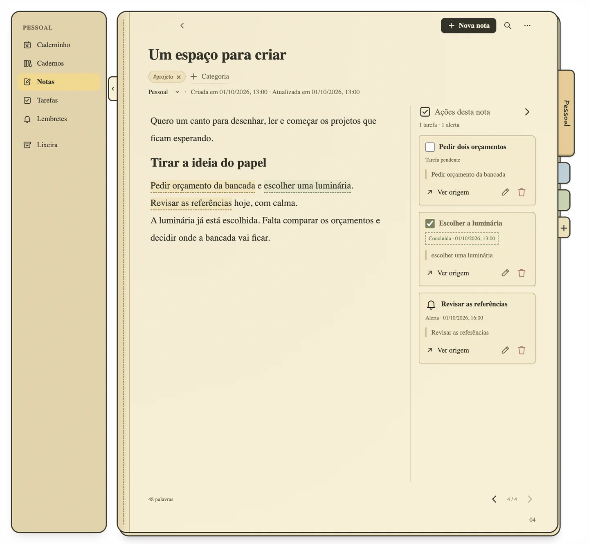
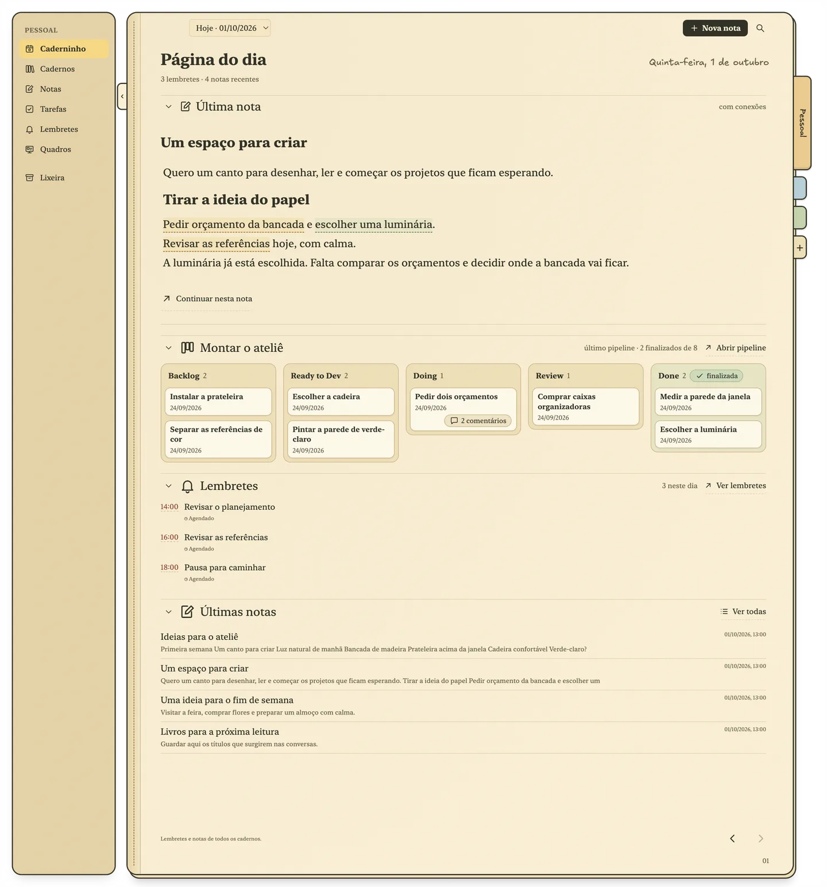

Caderninho: notas que viram tarefas sem perder o contexto
Um caderno para o Mac que guarda de onde cada tarefa veio.
Você escreve “pedir dois orçamentos” numa nota sobre a reforma da cozinha.
Uma nota comum, no meio de outras coisas que você pensou.
Selecione o trecho e transforme em tarefa ou lembrete.
Imagens e cartões de link também podem originar ações.
A tarefa vai para a margem, presa à frase que a criou.
O trecho ganha um destaque tracejado. Uma nota pode ter várias tarefas e vários alertas.
A tarefa está numa lista com outras coisas. Na maioria dos apps, ninguém lembraria de qual reforma era.
Voltar à origem abre a nota e destaca o trecho.
Se você reescrever o trecho depois, a ação guarda a cópia e a margem avisa.
Concluída, o destaque fica verde.
A nota continua contando o que foi feito, e por quê.
Todo dia começa uma página nova.
A nota mais recente, as tarefas pendentes de todas as listas e margens, e os lembretes de hoje.
Os dias anteriores ficam exatamente como estavam.
Somente leitura: o que estava pendente, o que foi feito, o que estava agendado. Um diário que você nunca precisou escrever.
Feito em português desde o início, não traduzido.
Datas escritas na nota ganham um selo Agendar, e nada é agendado até você clicar. Hashtags viram categorias. A busca ignora acentos.
Esse é o app de verdade
A cena acima é uma recriação. Estas são capturas do Caderninho rodando, com exemplos fictícios.


O que mais ajuda
Páginas relacionadas, calculadas no seu Mac
A cada salvamento, o Caderninho compara a página com as outras do mesmo caderno, por categorias, palavras e significado, inclusive o texto dentro de imagens. Nenhum texto sai do seu computador. ⌥⌘R abre o grafo.
Referências ao lado da ideia
Imagens, PDFs e cartões de link ficam ao lado do parágrafo a que pertencem, e os links continuam funcionando sem internet.
Diagramas como texto
Digite /diagrama e escreva um fluxograma, uma sequência ou uma linha do tempo em Mermaid. Ele é desenhado com traço de mão dentro da nota.
Seus dados, numa pasta
Notas, listas, lembretes e categorias ficam num banco SQLite, com imagens e PDFs ao lado:
Não há conta nem sincronização na nuvem. Para fazer backup, feche o app e copie a pasta. Qualquer página vira PDF com ⇧⌘E.
As únicas requisições de rede são as que você dispara: a prévia de um link que você colou e o download, uma única vez, do modelo das páginas relacionadas.
Limites
- Só para macOS, com interface em português.
- Os lembretes só tocam com o app aberto, mesmo minimizado. Um alerta perdido toca quando o app volta.
- Sem sincronização entre computadores e sem versão para celular.
- Ainda não importa notas de outros apps.